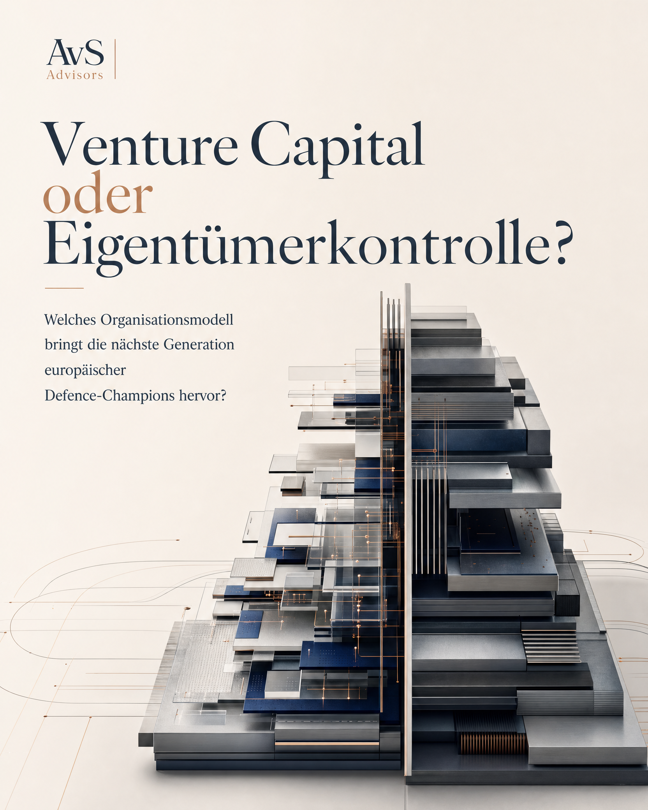

Venture Capital oder Eigentümerkontrolle?
Die öffentliche Diskussion konzentriert sich häufig auf Kapital, KI und neue Wettbewerber.
Für Eigentümerfamilien, Beiräte und Geschäftsführungen entsteht jedoch eine andere Frage: Wie müssen Führung, Governance und Organisationsfähigkeit weiterentwickelt werden, damit langfristige Stärken auch unter neuen Marktbedingungen Wettbewerbsvorteile bleiben?
Führung
Governance
Nachfolgefähigkeit
WAS ROHDE & SCHWARZ INTERESSANT MACHT
Rohde & Schwarz ist nicht deshalb interessant, weil das Unternehmen exemplarisch für den Defence-Markt steht.
Rohde & Schwarz ist interessant, weil hier mehrere Eigenschaften zusammenkommen, die für viele familiengeführte Technologieunternehmen relevant werden könnten.
Gerade die Kombination aus Eigentümerkontrolle, technologischer Tiefe und strategischer Relevanz macht das Unternehmen zu einem interessanten Ausgangspunkt für eine größere Eigentümerfrage.
LANGFRISTIGE EIGENTÜMERKONTROLLE
Eines der wenigen europäischen Technologieunternehmen mit langfristiger Unabhängigkeit und Eigentümerkontrolle.
TECHNOLOGISCHE TIEFE
Kompetenzen und Marktpositionen, die nicht kurzfristig replizierbar sind.
STRATEGISCHE RELEVANZ
Aktive Rolle in einem Markt, der durch KI, Software und geopolitische Veränderungen neu definiert wird.
Gerade deshalb eignet sich Rohde & Schwarz als Ausgangspunkt für eine größere Eigentümerfrage.
Nicht Kapital gegen Tradition. Sondern Geschwindigkeit gegen die Fähigkeit, langfristige Stärken neu zu organisieren.
Kapitalisierte Geschwindigkeit
- Kapital
- Geschwindigkeit
- Skalierung
- Risikobereitschaft
- Plattformlogik
Kontrollierte Langfristigkeit
- Unabhängigkeit
- Langfristigkeit
- Vertrauen
- Souveränität
- industrielle Tiefe
Die eigentliche Gefahr liegt nicht in besserer KI.
Die Gefahr besteht darin, dass Führungs- und Eigentümerstrukturen nicht schnell genug weiterentwickelt werden, während Markt, Technologie und Wettbewerb ihre Anforderungen verändern.
Die entscheidende Frage lautet nicht, ob ein Unternehmen KI nutzt. Die entscheidende Frage lautet, ob seine Führungs- und Eigentümerstrukturen dafür sorgen, dass es auch unter neuen Bedingungen handlungsfähig bleibt.
Acht Fragestellungen, die sich aus unserer Betrachtung von Rohde & Schwarz ergeben haben.
Führung
Klare Entscheidungsrechte für Zukunftsfragen.
Governance
Strukturen, die Souveränität und Geschwindigkeit gleichzeitig ermöglichen.
Talent
Zugang zu Profilen, die Technologie, Markt und Führungsverantwortung verbinden.
Nachfolgefähigkeit
Übergänge so gestalten, dass Eigentümerwille und Zukunftsfähigkeit zusammenfinden.
Innovationsgeschwindigkeit
Experimente ohne Verlust industrieller Verlässlichkeit.
KI-Fähigkeit
KI als strategische Systemschicht.
Kapital
Kapitalallokation für Software, Daten und Integration.
Ökosystem
Kontrolle über Partner, Schnittstellen und Regeln.
Aus Sicht von Eigentümern, Beiräten und Geschäftsführungen.
Rohde & Schwarz dient als konkreter Referenzfall. Die Analyse fragt nicht, wie sich der Defence-Markt technisch entwickelt, sondern welche Führungs-, Governance- und Nachfolgefähigkeiten familiengeführte Technologieunternehmen jetzt stärken müssen.

AvS Advisors begleitet Eigentümer, Familienunternehmen, Beiräte und Top-Management bei Führungs-, Nachfolge- und Governance-Fragen.
Die Analyse entstand aus der Beschäftigung mit Rohde & Schwarz, adressiert jedoch eine Fragestellung, die weit über den Defence-Markt hinausgeht und für viele familiengeführte Technologieunternehmen relevant werden könnte.